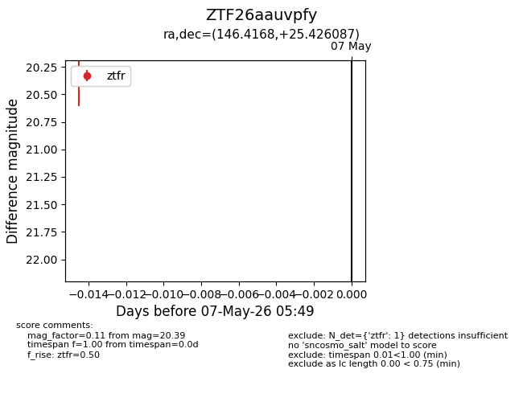
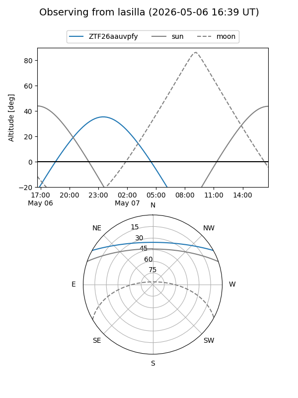
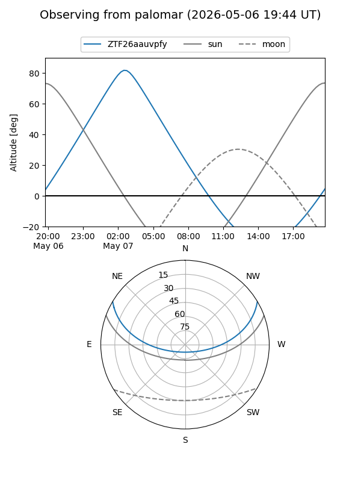

ZTF26aauvpfy
Target ZTF26aauvpfy at 2026-05-07 05:51
Aliases and brokers:
FINK: link
Lasair: link
ALeRCE: link
alt names
ZTF26aauvpfy (ztf,fink_ztf)
Coordinates:
equatorial (ra, dec) = 146.4168,+25.42609
equatorial (HMS+DMS) = 09:45:40.02,+25:25:33.91
galactic (l, b) = (204.3871,+48.55971)
Flags:
Photometry:
last ztfr=20.39
1 ztfr detections
Lightcurve

Visibility


Additional plots